| Chem. Eng. Example 1 | Continuously Stirred Tank Reactor (CSTR) with energy balance and Van de Vusse reactions. |
| Chem. Eng. Example 2 | Binary distillation column model. |
| Chem. Eng. Example 3 | Batch reactor seeded crystallisation using the method of moments. |
| Chem. Eng. Example 4 | Solution of a discretized population balance using high resolution upwind schemes with flux limiter. Effect of flux limiters on the quality of prediction (Case I). |
| Chem. Eng. Example 5 | Solution of a discretized population balance using high resolution upwind schemes with flux limiter. Effect of flux limiters on the quality of prediction (Case II). |
| Chem. Eng. Example 6 | Model of a lithium-ion battery based on porous electrode theory as developed by John Newman and coworkers. |
| Chem. Eng. Example 7 | Steady-state Plug Flow Reactor (PFR) with energy balance and first order reaction. |
| Chem. Eng. Example 8 | Gas separation using a porous membrane on a metal support. The model applies generalised Maxwell-Stefan equations to predict the fluxes and the selectivities. The problem modelled is separation of CH4+C2H6 mixture on a zeolite (silicalite-1) membrane. |
| Chem. Eng. Example 9 | Industrial batch reactor example from Dow Chemical Company. |
Continuously Stirred Tank Reactor with energy balance and Van de Vusse reactions:
A -> B -> C
2A -> D
Reference: G.A. Ridlehoover, R.C. Seagrave. Optimization of Van de Vusse Reaction Kinetics Using Semibatch Reactor Operation, Ind. Eng. Chem. Fundamen. 1973;12(4):444-447. doi:10.1021/i160048a700
The concentrations plot:
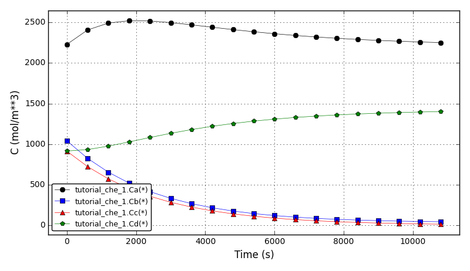The temperatures plot:
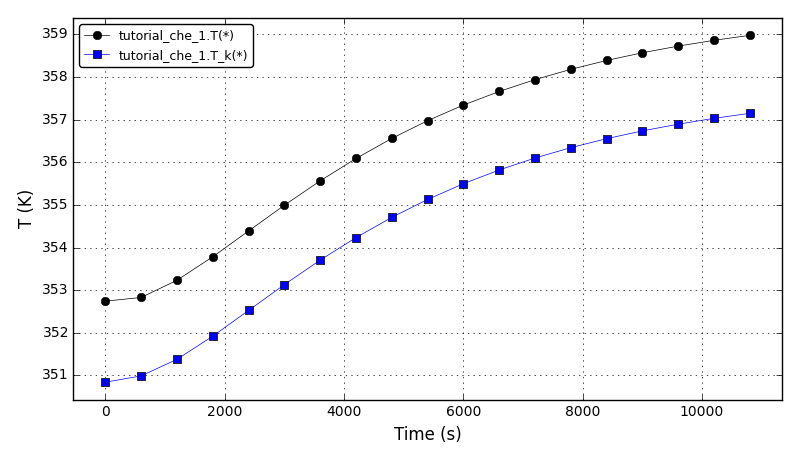Files
| Model report | tutorial_che_1.xml |
| Runtime model report | tutorial_che_1-rt.xml |
| Source code | tutorial_che_1.py |
Binary distillation column model.
Reference: J. Hahn, T.F. Edgar. An improved method for nonlinear model reduction using balancing of empirical gramians. Computers and Chemical Engineering 2002; 26:1379-1397. doi:10.1016/S0098-1354(02)00120-5
The liquid fraction after 120 min (x(reboiler)=0.935420, x(condenser)=0.064581):
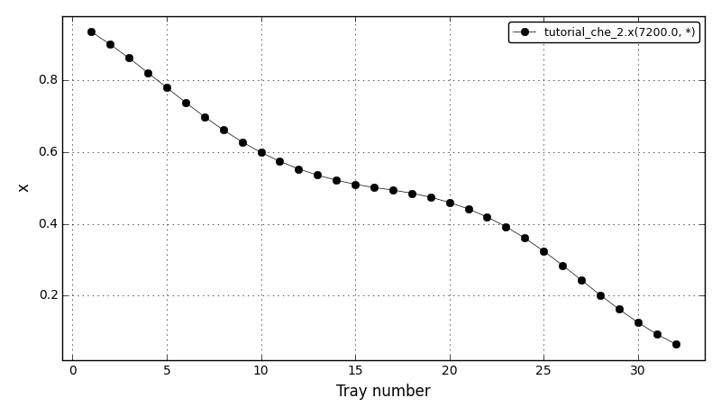The liquid fraction in the reboiler (tray 1) and in the condenser (tray 32):
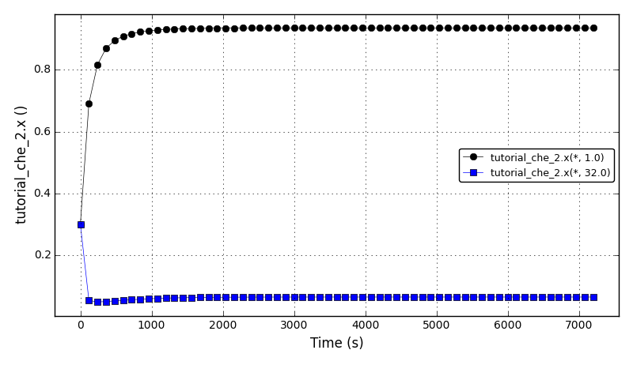Files
| Model report | tutorial_che_2.xml |
| Runtime model report | tutorial_che_2-rt.xml |
| Source code | tutorial_che_2.py |
Batch reactor seeded crystallisation using the method of moments.
References (model equations and input parameters):
The main assumptions:
Solubility of Paracetamol in ethanol:
---------------------------------------------------------
Temperature Solubility Solubility
C kg Parac./kg EtOH mol Parac./m3 EtOH
---------------------------------------------------------
0 0.11362 593.0387
10 0.14128 737.4215
20 0.17568 916.9562
30 0.21845 1140.2008
40 0.27163 1417.7972
50 0.33777 1762.9779
60 0.42000 2192.1973
---------------------------------------------------------
The supersaturation plot:
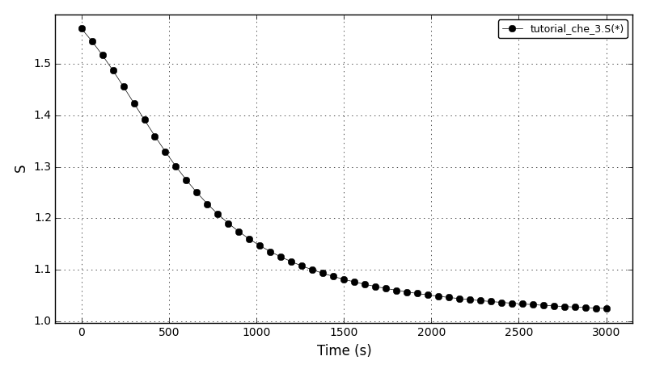The concentration plot:
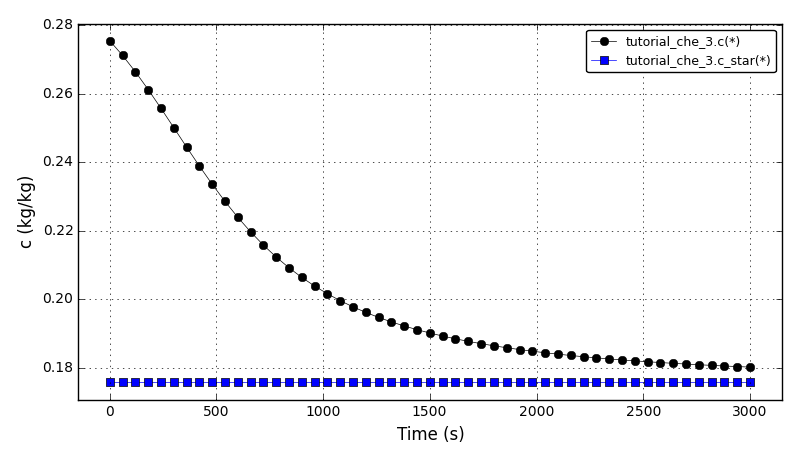The recovery plot:
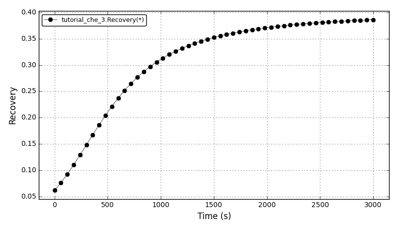The yield plot:
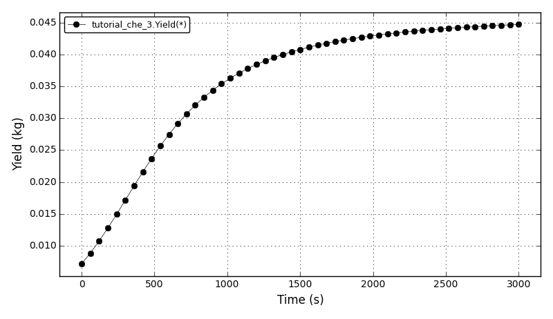The total number of crystals plot:
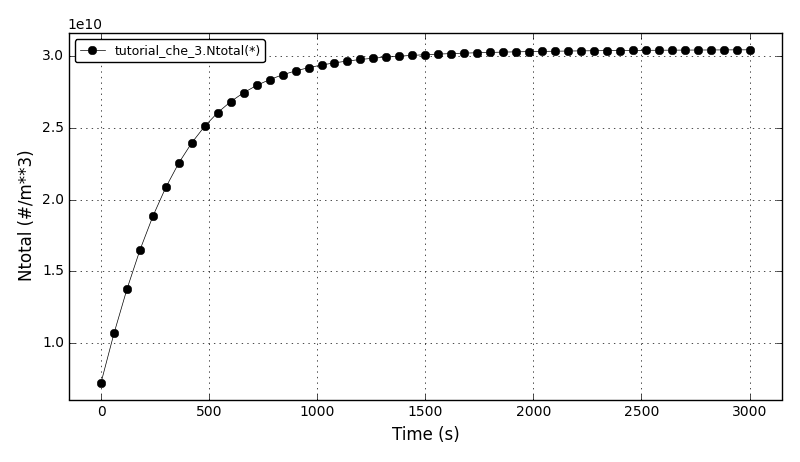Files
| Model report | tutorial_che_3.xml |
| Runtime model report | tutorial_che_3-rt.xml |
| Source code | tutorial_che_3.py |
This example shows a comparison between the analytical results and the discretised population balance equations results solved using the cell centered finite volume method employing the high resolution upwind scheme (Van Leer k-interpolation with k = 1/3) and a range of flux limiters.
This tutorial can be run from the console only.
The problem is from the section 4.1.1 Size-independent growth I of the following article:
and also from the section 3.1 Size-independent growth of the following article:
The growth-only crystallisation process was considered with the constant growth rate of 1μm/s and the following initial number density function:
n(L,0): 1E10, if 10μm < L < 20μm
0, otherwise
The crystal size in the range of [0, 100]μm was discretised into 100 elements. The analytical solution in this case is equal to the initial profile translated right in time by a distance Gt (the growth rate multiplied by the time elapsed in the process).
The flux limiters used in the model are:
Comparison of L1- and L2-norms (ni_HR - ni_analytical):
--------------------------------------
Scheme L1 L2
--------------------------------------
superbee 1.786e+10 7.016e+09
Sweby 2.817e+10 8.614e+09
Koren 3.015e+10 9.293e+09
smart 2.961e+10 9.326e+09
MC 3.258e+10 9.807e+09
HCUS 3.638e+10 1.001e+10
HQUICK 3.622e+10 1.005e+10
vanLeerMinmod 3.581e+10 1.011e+10
vanLeer 3.874e+10 1.059e+10
ospre 4.139e+10 1.094e+10
UMIST 4.363e+10 1.136e+10
Osher 4.579e+10 1.156e+10
vanAlbada1 4.574e+10 1.157e+10
minmod 5.653e+10 1.325e+10
vanAlbada2 5.456e+10 1.331e+10
-------------------------------------
The comparison of number density functions between the analytical solution and the solution obtained using high-resolution scheme with the Superbee flux limiter at t=60s:
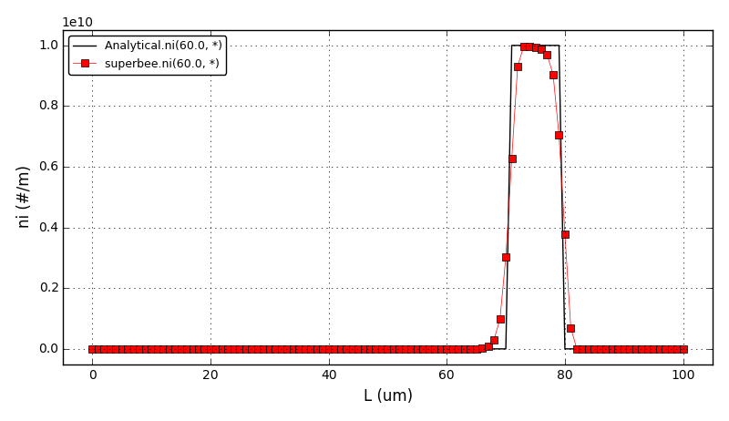The comparison of number density functions between the analytical solution and the solution obtained using high-resolution scheme with the Koren flux limiter at t=60s:
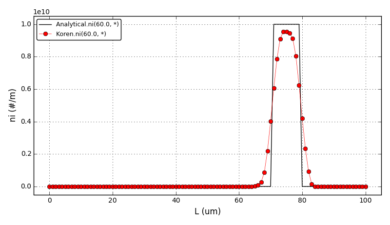Animation:
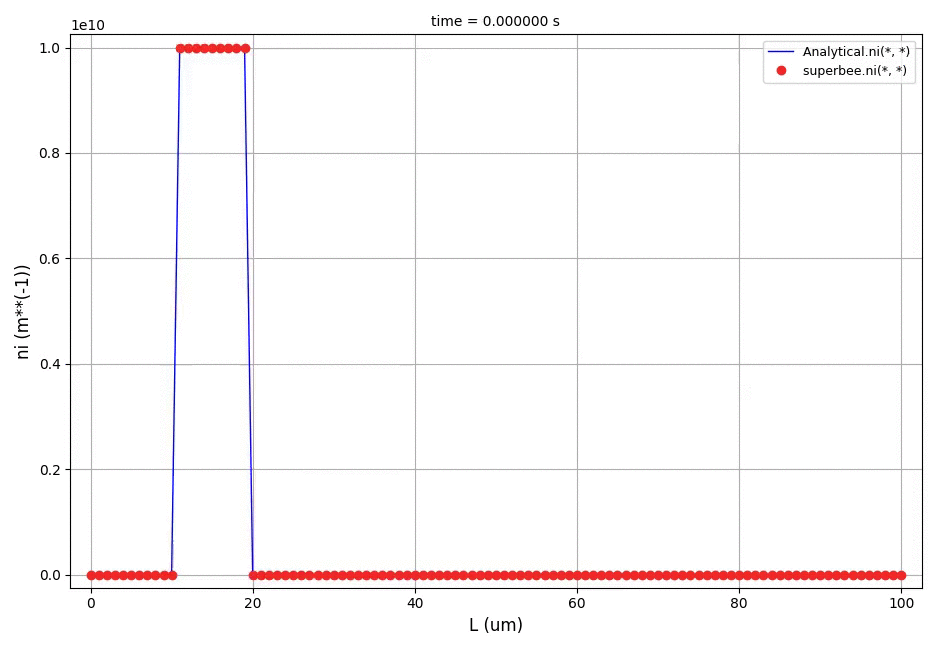Files
| Source code | tutorial_che_4.py |
| Analytical solution | fl_analytical.py |
Similar to the chem. eng. example 4, this example shows a comparison between the analytical results and the discretised population balance equations results solved using the cell centered finite volume method employing the high resolution upwind scheme (Van Leer k-interpolation with k = 1/3) and a range of flux limiters.
This tutorial can be run from the console only.
The problem is from the section 4.1.2 Size-independent growth II of the following article:
and also from the section 3.2 Size-independent growth of the following article:
Again, the growth-only crystallisation process was considered with the constant growth rate of 0.1μm/s and with the different initial number density function:
n(L,0): 0, if L <= 2.0μm
1E10, if 2μm < L <= 10μm (region I)
0, if 10μm < L <= 18μm
1E10*cos^2(pi*(L-26)/64), if 18μm < L <= 34μm (region II)
0, if 34μm < L <= 42μm
1E10*sqrt(1-(L-50)^2/64), if 42μm < L <= 58μm (region III)
0, if 58μm < L <= 66μm
1E10*exp(-(L-70)^2/(2sigma^2)), if 66μm < L <= 74μm (region IV)
0, if 74μm < L
The crystal size in the range of [0, 100]μm was discretised into 200 elements. The analytical solution in this case is equal to the initial profile translated right in time by a distance Gt (the growth rate multiplied by the time elapsed in the process).
Comparison of L1- and L2-norms (ni_HR - ni_analytical):
-------------------------------------
Scheme L1 L2
-------------------------------------
superbee 4.464e+10 1.015e+10
smart 4.727e+10 1.120e+10
Koren 4.861e+10 1.141e+10
Sweby 5.435e+10 1.142e+10
MC 5.129e+10 1.162e+10
HQUICK 5.531e+10 1.194e+10
HCUS 5.528e+10 1.194e+10
vanLeerMinmod 5.600e+10 1.202e+10
vanLeer 5.814e+10 1.225e+10
ospre 6.131e+10 1.252e+10
UMIST 6.181e+10 1.259e+10
Osher 6.690e+10 1.275e+10
vanAlbada1 6.600e+10 1.281e+10
minmod 7.751e+10 1.360e+10
vanAlbada2 7.901e+10 1.413e+10
-------------------------------------
The comparison of number density functions between the analytical solution and the solution obtained using high-resolution scheme with the Superbee flux limiter at t=100s:
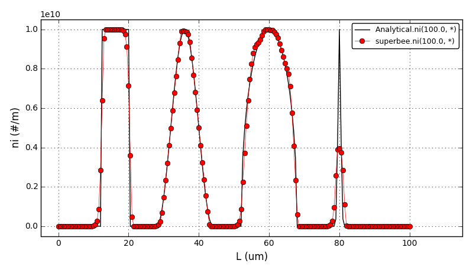The comparison of number density functions between the analytical solution and the solution obtained using high-resolution scheme with the Koren flux limiter at t=100s:
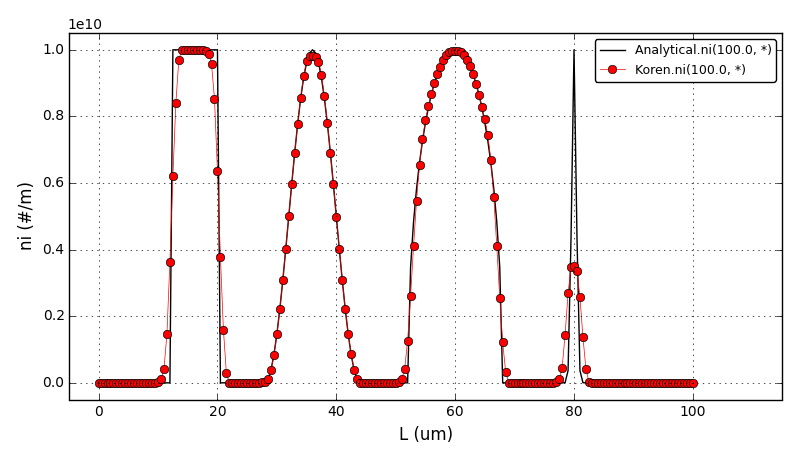Files
| Source code | tutorial_che_5.py |
| Analytical solution | fl_analytical.py |
Model of a lithium-ion battery based on porous electrode theory as developed by John Newman and coworkers. In particular, the equations here are based on a summary of the methodology by Karen E. Thomas, John Newman, and Robert M. Darling,
Thomas K., Newman J., Darling R. (2002). Mathematical Modeling of Lithium Batteries in Advances in Lithium-ion Batteries. Springer US. 345-392. doi:10.1007/0-306-47508-1_13
A few simplifications have been made rather than implementing the more complete model described there. For example, the following assumptions have (currently) been made:
The up to date version of the model is available at Raymond’s GitHub repository: https://github.com/raybsmith/daetools-example-battery.
The voltage plot:
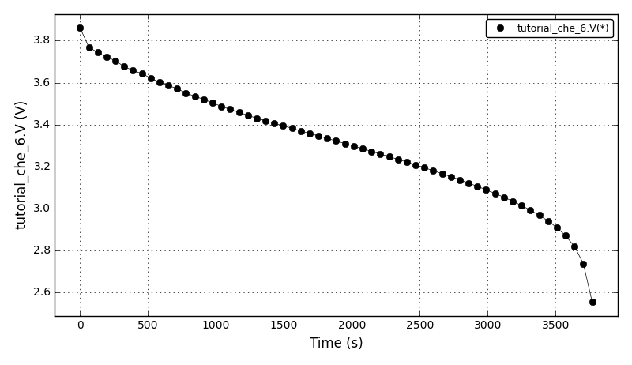The current plot:
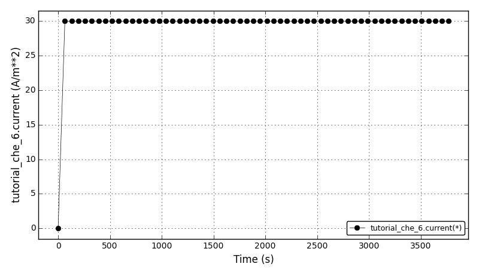Files
| Model report | tutorial_che_6.xml |
| Runtime model report | tutorial_che_6-rt.xml |
| Source code | tutorial_che_6.py |
Steady-state Plug Flow Reactor with energy balance and first order reaction:
A -> B
The problem is example 9.4.3 from the section 9.4 Nonisothermal Plug Flow Reactor from the following book:
The dimensionless concentration plot:
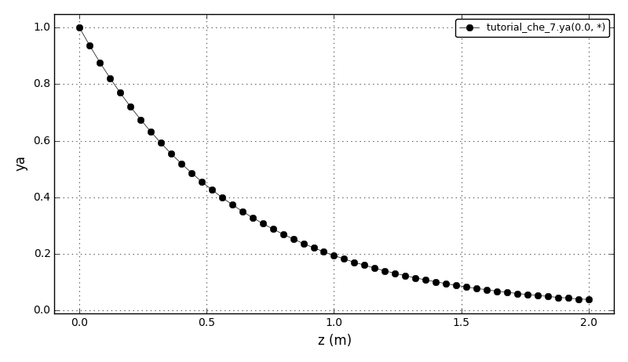The dimensionless temperature plot (adiabatic and nonisothermal cases):
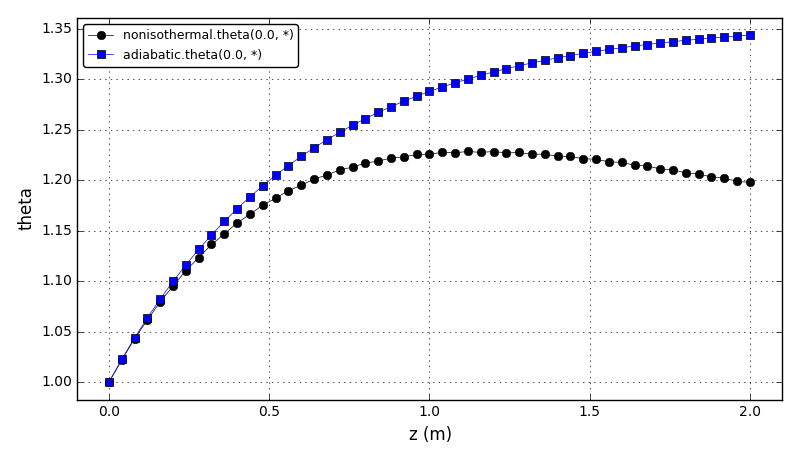Files
| Model report | tutorial_che_7.xml |
| Runtime model report | tutorial_che_7-rt.xml |
| Source code | tutorial_che_7.py |
Model of a gas separation on a porous membrane with a metal support. The model employs the Generalised Maxwell-Stefan (GMS) equations to predict fluxes and selectivities. The membrane unit model represents a generic two-dimensonal model of a porous membrane and consists of four models:
The retentate compartment, the porous membrane, the support layer and the permeate compartment are coupled via molar flux, temperature, pressure and gas composition at the interfaces. The model is described in the section 2.2 Membrane modelling of the following article:
and in the original Krishna article:
This version is somewhat simplified for it only offers an extended Langmuir isotherm. The Ideal Adsorption Solution theory (IAS) and the Real Adsorption Solution theory (RAS) described in the articles are not implemented here.
The problem modelled is separation of hydrocarbons (CH4+C2H6) mixture on a zeolite (silicalite-1) membrane with a metal support from the section ‘Binary mixture permeation’ of the following article:
The CH4 and C2H6 fluxes, and CH4/C2H6 selectivity plots for two cases: GMS and GMS(Dij=∞), 1:1 mixture, and T = 303 K:
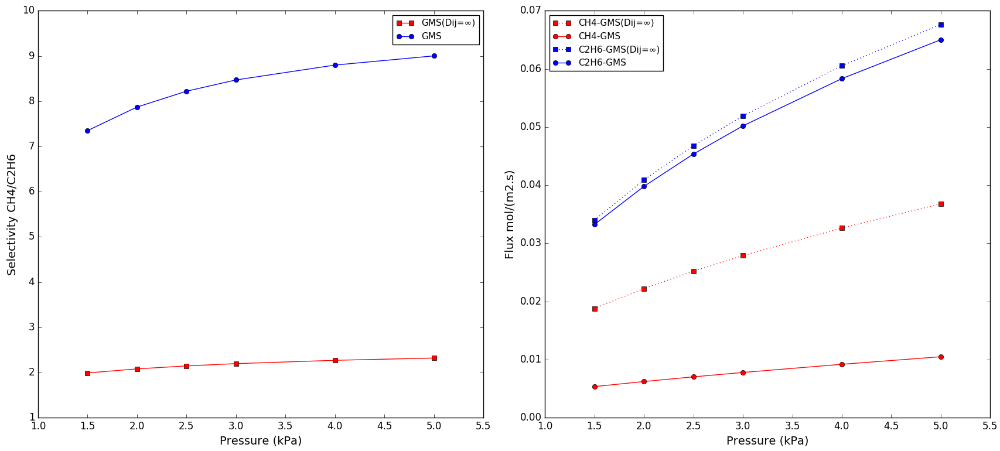Files
| Model report | tutorial_che_8.xml |
| Runtime model report | tutorial_che_8-rt.xml |
| Source code | tutorial_che_8.py |
| Membrane unit | membrane_unit.py |
| Variable types | membrane_variable_types.py |
| Membrane model | membrane.py |
| Support model | support.py |
| In/out compartment | compartment.py |
Chemical reaction network from the Dow Chemical Company described in the following article:
The sensitivity analysis is enabled and the sensitivity data can be obtained in two ways:
The concentrations plot (u1, u3, u4):
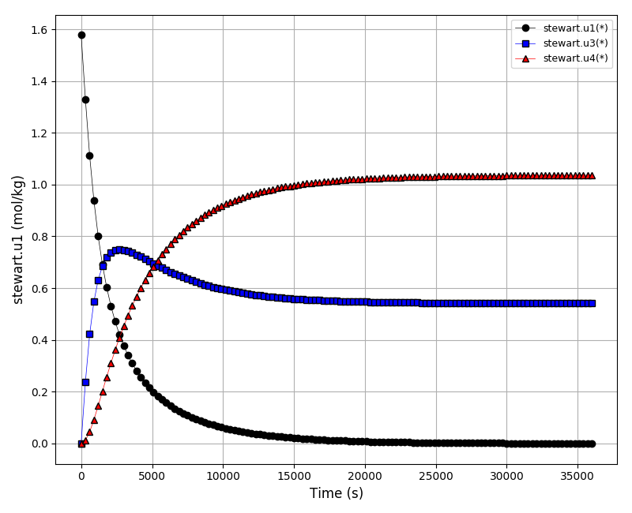The concentrations plot (u6, u8):
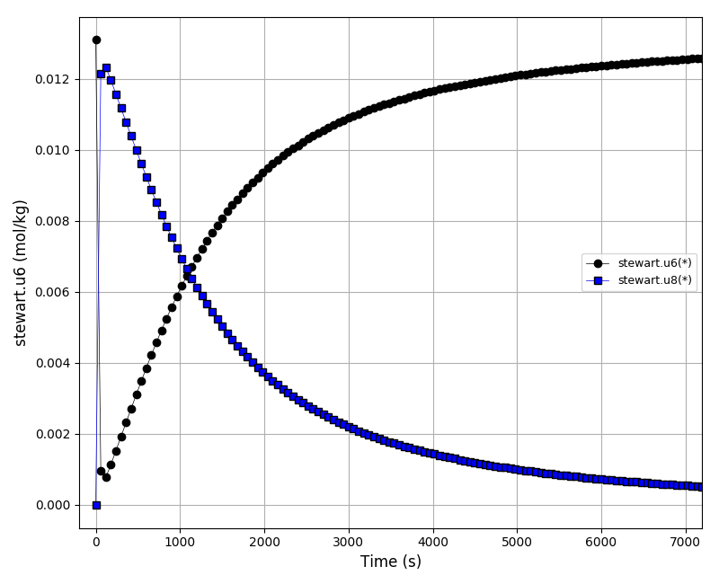The sensitivities plot (k2*du1/dk2, k2*du2/dk2, k2*du3/dk2, k2*du4/dk2, k2*du5/dk2):
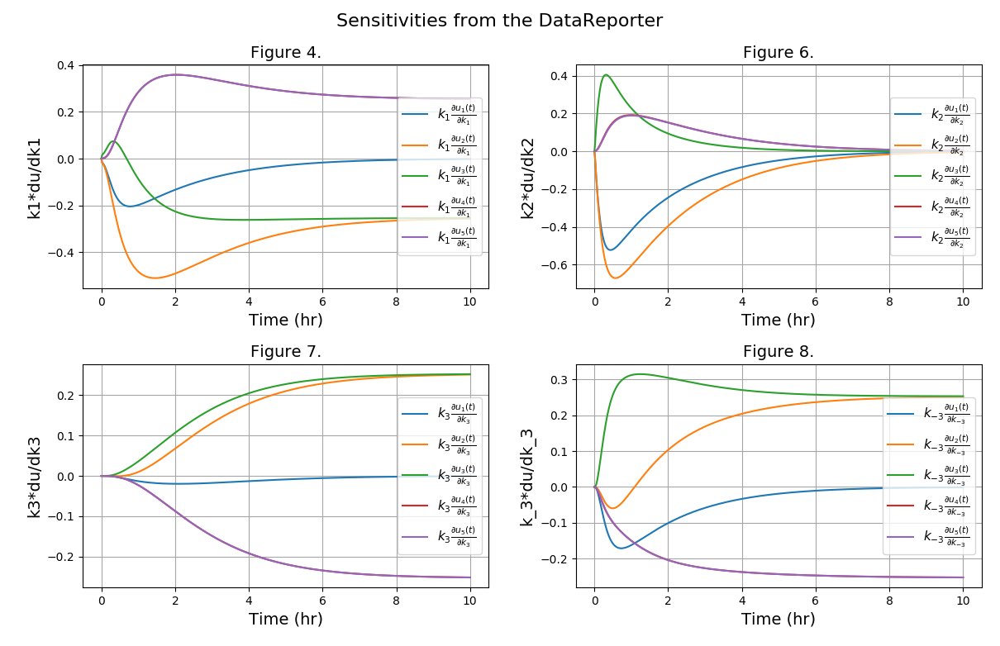Files
| Model report | tutorial_che_9.xml |
| Runtime model report | tutorial_che_9-rt.xml |
| Source code | tutorial_che_9.py |

{kind=link}
{kind=link}
{kind=link}
{kind=link}
{kind=link}
{kind=link}
{kind=link}
{kind=link}
{kind=link}
{kind=link}
{kind=link}
{kind=link}
{kind=link}
{kind=link}
{kind=link}
{kind=link}
{kind=link}
{kind=link}
{kind=link}
{kind=link}
{kind=link}
{kind=link}